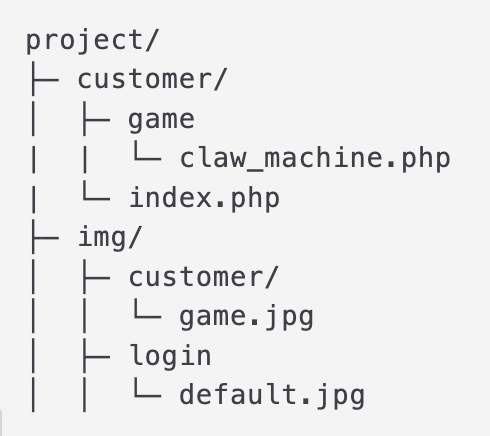
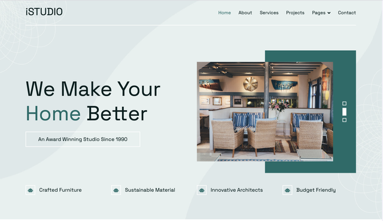
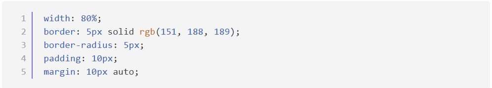
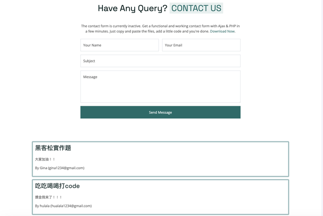
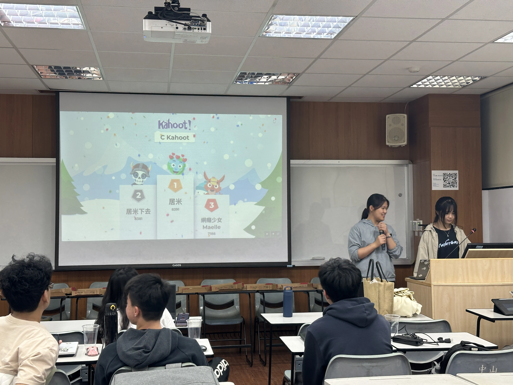
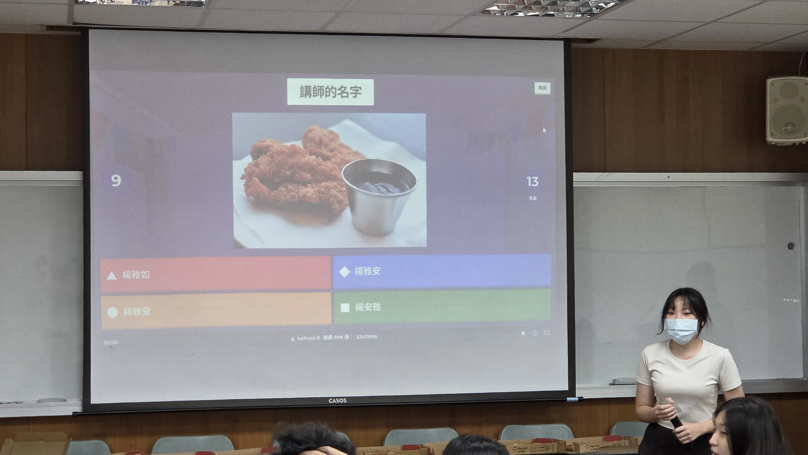
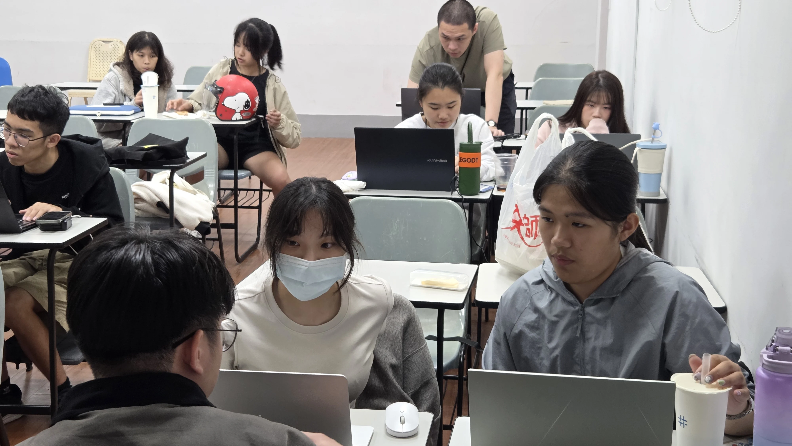
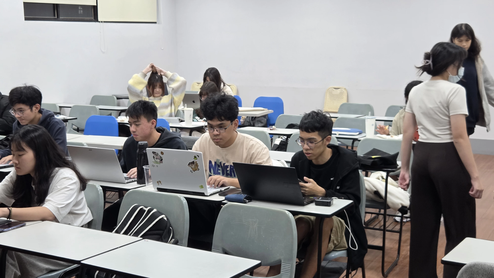
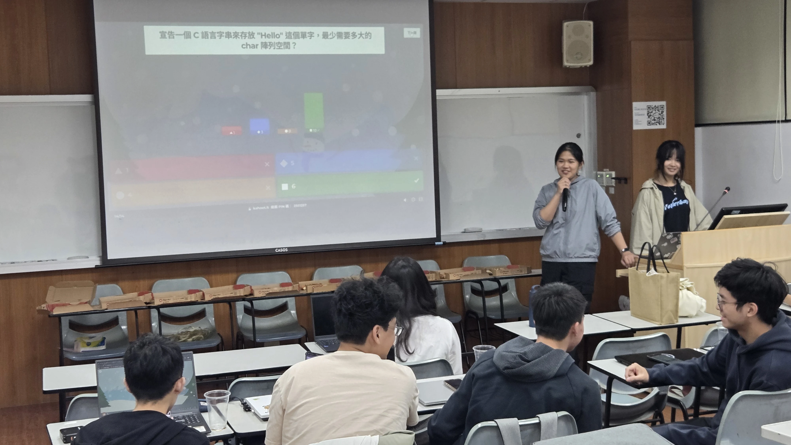
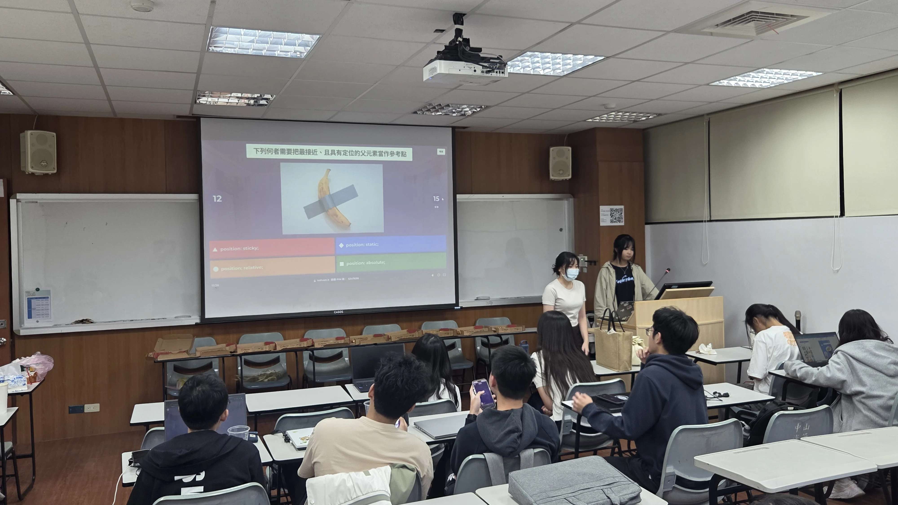

114-1期末黑客松
本學期網研社社團即將告一段落，為了感謝辛苦的講師們、幹部們以及剛結束期末考的社員，為此舉辦一個期末聚會，進行小比賽驗收教學成果，並藉此促進社員感情。
活動內容
C語言和WEB與實作競賽
時間、地點
- 日期：2025年12月16日 (二)
- 場地：CM1019
活動流程
| 18:30 - 19:15 | 吃吃喝喝 & 期末總結 |
| 19:20 - 19:40 | WEB 說明與 Kahoot 比賽 |
| 19:45 - 20:05 | C 語言說明與 Kahoot 比賽 |
| 20:10 - 20:50 | 同學實作部分時間 |
| 20:50 - 21:00 | 頒獎 + 大合照 |
活動摘要：C 語言
基礎程式設計入門
這次活動以 C 語言程式設計 為核心，搭配 Kahoot 小遊戲與程式實作。流程兼具概念檢測與實作練習，目的在於確認學生是否掌握課堂內容，並強化 C 語言能力。
活動摘要：Web 程式設計
網頁設計應用
整合過去課堂觀念，透過 Kahoot 互動問答檢測基礎，並在實作階段依照指定樣式製作網頁，驗證是否能運用所學。
比賽規則
- 不可使用任何 AI 工具。
- 可參考先前的講義或上網查詢語法。
- 排名依照得分高低。
- 不同題目會依據難易度給分。
- 爬蟲需實際運行給講師看，不可複製同學程式碼。
題目舉例說明
從零開始學 C 語言：基礎程式設計入門
完整題目連結題目：
在 C 語言中，如果在函式內部宣告一個 int 型態的區域變數但未賦予初始值，直接將其印出會發生什麼情況？
選項：
正確答案：B
解析：C 語言基於效能考量，不會主動幫區域變數「掃地」（初始化）。區域變數配置在堆疊 (Stack) 空間，若未初始化，讀取該位址會拿到殘留的舊資料（垃圾值）。
教學目標：理解 C 語言『效能優先』的記憶體配置邏輯，養成『宣告即初始化』的習慣。
.jpg)
.jpg)
.jpg)
.jpg)
Web 程式設計 Kahoot
完整題目連結題目：
在 claw_machine.php 引用 game.jpg 的相對路徑為何?

選項：
正確答案：B
解析：需往上一層目錄跳兩次才能回到根目錄找到 img 資料夾。
Web 程式設計 實作
總共4題，3題+1題加分題。
Web程式設計實作題目連結題目A：Navbar & Hero

題目B：Javascript 互動
點擊送出後顯示列表，需包含 CSS 設計。


得獎照片
C 語言 Kahoot 得獎
得獎：林思芸、柯絜甯、高定驤
Web Kahoot 得獎
得獎：李蘇容、汪泓易、汪俊廷
C 語言實作得獎
得獎：白成君、林思芸、柯絜甯、高定驤
Web 實作得獎
得獎：林柏翰、李蘇容、汪泓易
花絮照片






